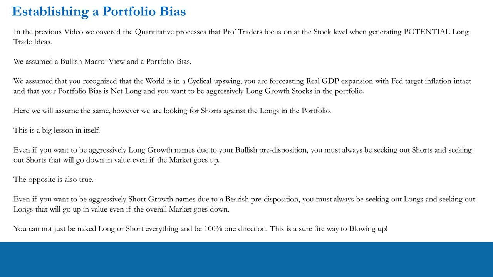
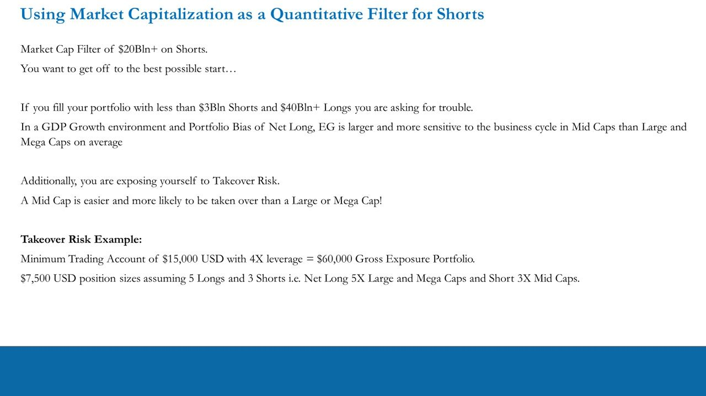
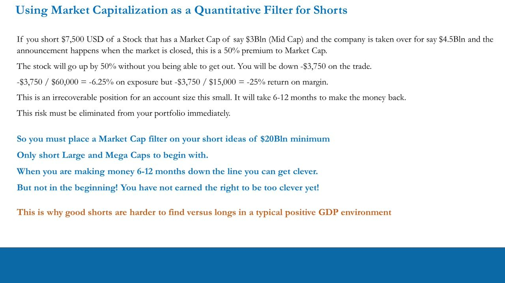
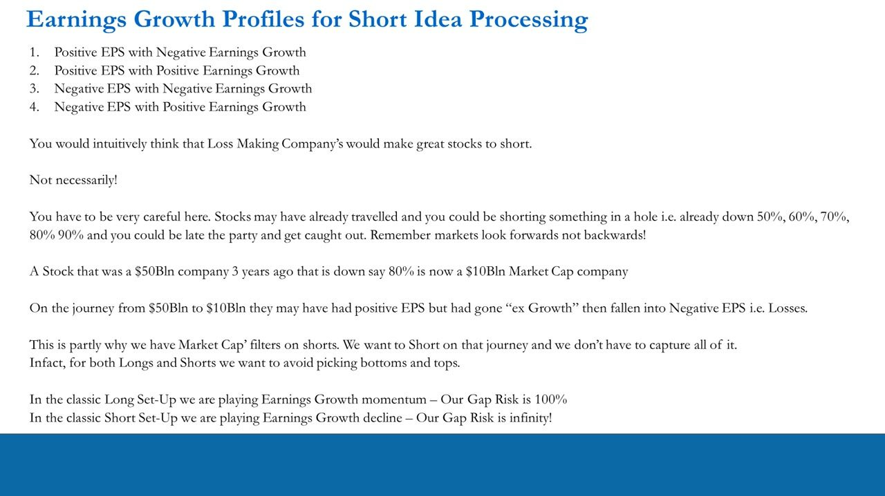
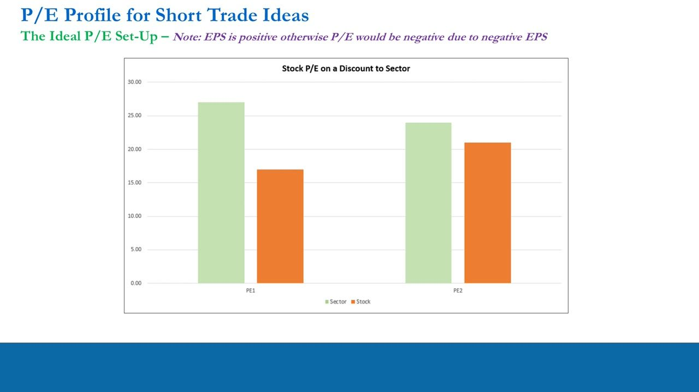
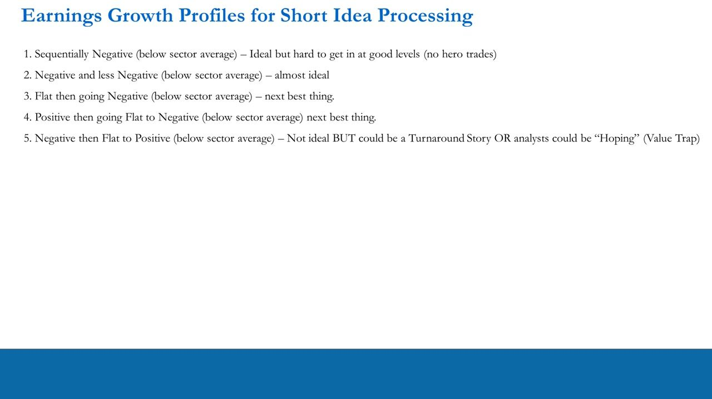
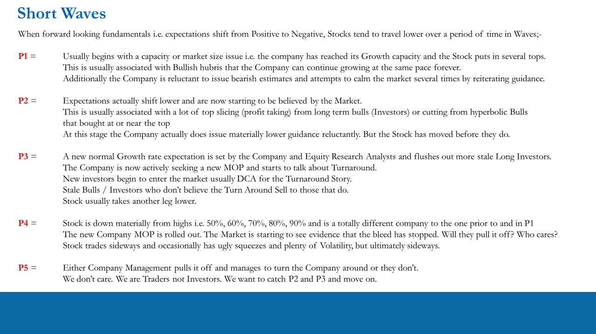
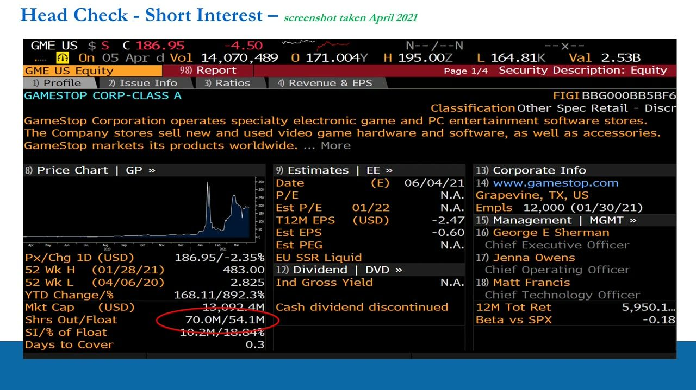
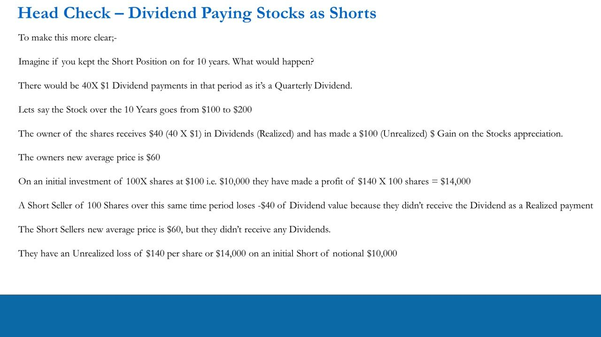

Trade Idea Generation – Quantitative Processing 5
The SHORT-side mirror of the longs mechanics: why you always seek shorts against your longs, why shorts live in the $20bn+ large/mega-cap space (takeover, short-squeeze and unbounded gap risk), the ideal short set-up (P/E discount to sector + negative/decelerating below-sector EG), the ten short EG profiles, the P1–P5 'Short Waves' decline model, and the technical head-checks — short interest / days-to-cover and shorting dividend-payers ('short the dividend').
Shorts balance the longs and are hunted in $20bn+ large/mega-caps to escape takeover and short-squeeze risk (a long can only lose 100%, a short's gap risk is infinity); the ideal short is a P/E discount to sector with negative, decelerating, below-sector Earnings Growth; catch waves P2–P3 of the decline; short interest / days-to-cover is a head-check, and shorting a dividend-payer means you PAY the dividend.
The gist
- Always seek shorts against your longs. Even with an aggressively net-long, long-growth book you must hold shorts that fall even if the market rises (and vice versa). You can never be naked 100% one direction — that is a sure-fire way to blow up.
- Shorts get a $20bn+ market-cap filter (large and mega-caps only). Mid/small-caps as shorts expose you to (1) takeover risk — a mid-cap is far easier to acquire than a mega-cap; (2) short-squeeze risk; and (3) higher, more cycle-sensitive EG. This is why good shorts are harder to find than longs in a positive-GDP environment.
- Takeover worked example: a $15,000 account × 4x leverage = $60,000 gross, run as 5 longs + 3 shorts at $7,500 each (net long 5x large/mega, short 3x mid). Short $7,500 of a $3bn mid-cap; it is taken over for $4.5bn (+50% premium) with the market closed and gaps 50% against you: −$3,750, i.e. −6.25% of exposure but −25% on margin — irrecoverable for a small account (6–12 months to recover).
- Gap-risk asymmetry: a classic long plays EG momentum and its gap risk is at most 100% (you can only lose your stake). A classic short plays EG decline and its gap risk is infinity — an unbounded loss — so short EG profiles must be treated differently and defensively (hence the market-cap filter).
- The ideal short set-up is a P/E at a DISCOUNT to the sector in both periods PLUS negative / decelerating below-sector-average Earnings Growth. Ten short EG profiles rank from ideal (sequentially negative, below sector) down through positive-below-sector 'hedge' cases (not good enough) to loss-making turnaround / value-trap cases (8–10) that are opportunistic AND dangerous.
- The P1–P5 'Short Waves' decline model maps how an ex-growth stock travels lower: P1 tops on a capacity/size issue (don't pick the top), P2 expectations shift lower and are believed, P3 a new-normal growth rate is set and a turnaround is talked up, P4 the stock is down 50–90% and chops sideways with ugly squeezes, P5 the turnaround works or not — we don't care. Catch P2 and P3, then move on.
- Technical head-checks (not signals): short interest % (= shares short ÷ float; a sentiment gauge) and, more usefully, days-to-cover (= shares short ÷ 30-day avg volume; a liquidity/squeeze gauge). Never rank these to generate ideas. Shorting a dividend-payer means you 'short the dividend' — you owe it and your average price adjusts down on ex-div, so held 10 years a $1 quarterly dividend costs ≈ $14,000; only short a payer if you have conviction the dividend gets cut.
Establishing a portfolio bias — always seek shorts against the longs
- Video 25 covered LONG trade-idea mechanics under an assumed bullish macro view and net-long bias (world in cyclical upswing, Real GDP expanding, Fed-target inflation intact, aggressively long growth stocks).
- This lesson assumes the SAME backdrop but hunts SHORTS against those longs — a big lesson in itself.
- Even when you want to be aggressively long growth, you must always seek shorts — and shorts that fall in value even if the market goes UP. The opposite holds for a bearish book (seek longs that rise even if the market falls).
- You can never be naked long or short everything / 100% one direction. That is a sure-fire way to blowing up.
- 'Go where the juice is' (reminder): US stock market (~2,200+ stocks) → industry sectors (cyclicals & defensives) → stocks (growth, ex-growth & value). On the short side you want ex-growth names and potential value traps.
Shorts are structural, not optional — a long/short book needs both legs in any GDP environment. Under a net-long bias the shorts are fewer and harder to find, but the process is the same: filter, then do the qualitative work.

Market cap as a filter for shorts — the $20bn+ floor and takeover risk
- Put a $20bn minimum market-cap filter on shorts — only short Large and Mega caps to begin with. Fill a book with sub-$3bn shorts and $40bn+ longs and you are asking for trouble (short high-volatility / long low-volatility, the exact opposite of the goal).
- In a GDP-growth, net-long environment, EG is larger and more cycle-sensitive in mid-caps than in large/mega-caps on average.
- Takeover risk: a mid-cap is easier and more likely to be taken over than a large or mega-cap — acquirers (like us) are attracted to growth, and financing a mid-cap bid is far easier than a mega-cap one.
- Worked frame: $15,000 account × 4x leverage = $60,000 gross exposure; 8 positions of $7,500 (5 longs + 3 shorts) → net long 5x Large/Mega, short 3x Mid caps.
- Only when you are making money 6–12 months in can you 'get clever' — not at the beginning. This is why good shorts are harder to find than longs in a typical positive-GDP environment.
The filter is really a risk filter: it removes the exposures (takeover, squeeze, gap) that can blow up a small account before skill ever gets a chance to compound.

The takeover-gap worked example — why the filter exists
- Short $7,500 of a $3bn (Mid Cap) stock; the company is taken over for $4.5bn — a 50% premium to yesterday's market cap — announced while the market is closed.
- The stock gaps up 50% with no chance to exit: you are down −$3,750 on the trade.
- −$3,750 / $60,000 = −6.25% on exposure, but −$3,750 / $15,000 = −25% return on margin.
- For an account this small it is an irrecoverable position — 6–12 months to make the money back. This risk must be eliminated from the portfolio immediately.
- Hence: a $20bn minimum market-cap filter on all short ideas; short Large and Mega caps only to start.

Gap-risk asymmetry — a long loses 100%, a short loses infinity
- EG/EPS profiles at a glance: (1) positive EPS + negative EG; (2) positive EPS + positive EG; (3) negative EPS + negative EG; (4) negative EPS + positive EG.
- Loss-makers look like obvious shorts — NOT necessarily. A stock may have already travelled (down 50/60/70/80/90%); markets look forwards, not backwards, so you can be late and get caught.
- A stock that was a $50bn company 3 years ago and is down ~80% is now a ~$10bn market cap — on that journey it went ex-growth then into losses. We want to short part of that journey, not all of it, and avoid picking tops and bottoms.
- Classic LONG set-up plays Earnings Growth momentum — gap risk is 100% (you can only lose your stake).
- Classic SHORT set-up plays Earnings Growth decline — gap risk is INFINITY (an unbounded loss). This asymmetry is why shorts and their EG profiles must be treated differently, and why the market-cap filter exists.
Whether you short something up a huge amount or down a lot, the downside is still infinite — the direction of the prior move doesn't cap the risk. Defensiveness (the cap filter) is structural, not situational.

The ideal P/E set-up for shorts — a discount to sector
- Ideal short P/E: the stock's P/E sits at a DISCOUNT to the sector in both periods — the mirror of the longs' premium (illustrative Sector PE1 ~27, Stock ~17; Sector PE2 ~24, Stock ~21). Note EPS is still positive here, otherwise P/E would be negative.
- But a P/E discount is NOT enough on its own — EPS can still be positive; you need the earnings-growth story too.
- Not-ideal variant: EPS forecast negative in BOTH periods gives a negative P/E (illustrative Stock PE1 ~−44, PE2 ~−21 vs Sector +26 / +22) — that is a turnaround story or value trap, not a clean short.
- Caveat — don't reflexively short negative EG: check Revenue Growth. A name may still be a growth story reinvesting revenue into the top line. Negative EG does NOT automatically mean 'short'; further work is always required. Beware the 'law of small numbers'.
The market punishes a genuinely ex-growth stock by rating its earnings BELOW the sector (a P/E discount) — the exact inverse of how it rewards a growth long with a premium. But the discount is a symptom to confirm, not a trigger to trade.

The ten short EG profiles — from ideal to turnaround/value-trap
- Cases 1–4 (positive-EPS, below-sector): 1) Sequentially Negative (below sector) — ideal, but hard to enter at good levels (no hero trades); 2) Negative & less Negative (Stock EG1 −14% → EG2 −8% vs Sector +5% → +9%) — almost ideal; 3) Flat then going Negative — next best; 4) Positive then Flat-to-Negative (Stock EG1 +8% → EG2 −3% vs Sector +14% → +18%) — next best.
- Case 5: Negative then Flat-to-Positive but still below sector (Stock EG1 −12% → EG2 +6% vs Sector +5% → +11%) — not ideal; could be a Turnaround Story OR analysts 'hoping' (Value Trap).
- Cases 6–7 (positive, at/above-ish sector): 6) Positive then Positive but BELOW sector — not ideal, more like a hedge; we want better. 7) Anything equivalent to sector or higher — not worth shorting.
- Cases 8–10 (loss-making, negative EPS in period 1): 8) then Positive above sector (Stock EG1 −25% → EG2 +100%, recovering 100% of losses) — turnaround or value trap; 9) then still Negative at/below sector — turnaround or value trap; both Opportunistic AND Dangerous. 10) then MORE Negative (Stock EG1 −11% → EG2 −22% vs Sector −4% → −9%) — a 'zero-to-hero' trade.
- Related PEG frame: PEG at a discount to sector in both years with year-2 loss-making or negative EG2 (illustrative Stock PEG1 ~0.78, PEG2 ~−0.65 vs Sector ~1.05 / ~0.95) — close to ideal (next best) since EPS/PE/EG1 are still positive in year 1.
As short traders on a 20–60 day horizon we want EARNINGS DECLINE, ideally accelerating and below-sector in both periods. The loss-making turnaround cases (8–10) earn attention on the magnitude of the swing, but arguing with the market's turnaround expectation while facing infinite gap risk is dangerous — a separate playbook, not the classic short.

Short Waves — the P1–P5 decline roadmap (catch P2–P3)
- When forward-looking fundamentals shift from positive to negative, ex-growth stocks travel lower in waves. P1: a capacity / market-size issue caps growth; the stock puts in several tops amid bullish hubris while management reiterates guidance to calm the market. Don't pick this top.
- P2: expectations actually shift lower and start to be believed — heavy top-slicing by long-term bulls; the company finally issues materially lower guidance, but the stock has already moved.
- P3: a new-normal growth rate is set by the company and analysts, flushing out more stale investors; the company seeks a new MOP and talks up a 'turnaround'; new investors DCA in for the turnaround story while stale bulls sell to them — the stock takes another leg lower.
- P4: the stock is down materially (50/60/70/80/90%) — a totally different company; the new MOP is rolled out; it trades sideways with ugly squeezes and high volatility. Don't short here (shorting in a hole).
- P5: management pulls off the turnaround or not — we don't care. We are traders, not investors: catch P2 and P3, then move on.
- Real examples: Under Armour went ex-growth from ~$25bn @ $50 to ~$5bn @ $10 (capture ~high-$30s down to low-$20s). Tenneco (TEN) ran $4bn @ $70 → $250mn @ $3 — too small/gappy to short despite the decline. Shopify (SHOP) at ~$1,145 / ~$165bn in April 2021, off a ~$1,400 top, is only P1 — too early; don't short an unconfirmed ex-growth name (a mega-cap can halve while a mid-cap doubles and meet at ~$15bn).
Unlike longs (whose path up is highly varied, so there is no template), ex-growth declines follow a typical average profile — which is exactly why the wave map is useful. We aim to capture half, two-thirds or three-quarters of the P2–P3 move, never all of it.

Head-check: short interest and days-to-cover (not a signal)
- Short interest % = shares sold short ÷ float — a SENTIMENT gauge of how bearish the market is (check via shortsqueeze.com).
- Days-to-cover = shares short ÷ 30-day average daily volume — a LIQUIDITY gauge (how many days for all shorts to buy back). More useful: a high ratio flags short-squeeze risk; both metrics high can also mean a stale, consensus, lazy-default short.
- GameStop (GME) case (April-2021 screenshots): sub-$10 in Oct 2020 (~$700mn market cap); short interest ran 50–60mn shares of just ~70mn outstanding (SI peak 71.196M) — hedge funds were short the equivalent of the ENTIRE market cap, and got shorter as the stock rose to defend the position. Screen shows Shrs Out/Float 70.0M / 54.1M, SI 10.2M / 18.84%, Days to Cover 0.3 after the squeeze.
- This is exactly why we have market-cap limits on shorts — shorting in a hole for the 'hero trade' is what blew them up.
- Do NOT rank short interest / days-to-cover to generate ideas (long the high-SI names, short the low). This is one tiny part of the process — used only to swerve traps and confirm your idea isn't consensus.
The GME squeeze is the cautionary tale for the whole lesson: a fundamentally 'right' short (a dying retailer) becomes lethal when the position is oversized relative to float and liquidity. The head-checks tell you whether you'd be crowded into that trap — they never tell you to put the trade on.

Head-check: shorting dividend-paying stocks ('short the dividend')
- When you short a dividend-payer you are 'short the dividend' — as a borrower of the stock you OWE the dividend to the owner you borrowed from (the broker handles it mechanically).
- Example: a $100 stock pays $1/quarter; you short 100 shares at $100 = $10,000 gross. It falls to $90 before ex-div — P/L +$1,000, mark-to-market gross $9,000.
- On ex-div the stock adjusts down $1 (to reflect cash leaving the balance sheet) and opens at $89; your average price adjusts to $99. Position: still 100 short; P/L: still +$1,000; gross exposure: now $8,900. The long owner's $1 price drop is offset by the $1 cash they receive (a wash); for the short it is just an average-price adjustment with no cash — a cost.
- 10-year worked P/L: 40 quarterly $1 dividends; stock $100 → $200. The owner collects $40 (realized) + $100 gain = +$140/share = +$14,000 on a $10,000 stake (new avg $60). The short seller foregoes the $40 of dividends and carries a −$140/share ≈ −$14,000 unrealized loss on a $10,000 notional short (new avg $60, but no dividend received).
- Stocks often trade above the ex-div adjustment (owners auto-reinvest) — 'went ex-dividend well' vs 'badly' (above/below the $89 adjustment price); many other variables apply.
- So don't blanket-avoid dividend payers — but only short one when you have conviction the DIVIDEND WILL BE CUT (a cratering business may cut it entirely and the stock gets hammered).
The dividend is a carrying cost of the short, not a signal — it just means a payer needs enough fundamental downside (or an outright dividend cut) to more than cover what you pay out over the holding period.

Glossary
- Always seek shorts against the longsYou must never be naked 100% long or short. A net-long, long-growth book still needs shorts that fall even if the market rises (and vice versa for a bearish book). Being 100% one direction is a sure-fire way to blow up the account.
- $20bn+ short market-cap filterShort only Large and Mega caps ($20bn minimum) to start. Filtering out mid/small-caps removes takeover risk, short-squeeze risk and excess EG/volatility. This is why good shorts are harder to find than longs in a positive-GDP environment; you only 'get clever' 6–12 months into consistent profitability.
- Takeover-gap worked example$15,000 account × 4x = $60,000 gross; 5 longs + 3 shorts at $7,500 each. Short $7,500 of a $3bn mid-cap taken over for $4.5bn (+50%) with the market shut: −$3,750 = −6.25% of exposure but −25% on margin — irrecoverable for a small account (6–12 months to recover). The reason for the $20bn floor.
- Gap risk: 100% vs infinityA long plays EG momentum and can lose at most 100% (its stake). A short plays EG decline and its gap risk is infinity — an unbounded loss — regardless of whether the name is up or down over the prior 1–3 years. This asymmetry forces the defensive market-cap filter on shorts.
- Ideal short set-up (P/E discount + declining below-sector EG)The stock's P/E at a DISCOUNT to sector in both periods (mirror of the longs' premium) PLUS negative / decelerating below-sector-average Earnings Growth. A P/E discount alone is not enough (EPS can still be positive) — the earnings-decline story is required, and negative EG never automatically means 'short'.
- The ten short EG profiles1) Sequentially negative below sector — ideal (hard to enter); 2) negative & less negative (−14%→−8% vs +5%→+9%) — almost ideal; 3) flat→negative; 4) positive→flat/negative (+8%→−3% vs +14%→+18%); 5) negative→flat/positive but below sector (−12%→+6%) — turnaround/value trap; 6) positive→positive below sector — a 'hedge', not good enough; 7) at/above sector — not worth shorting; 8) loss-making→positive above sector (−25%→+100%); 9) loss-making→still negative; 10) loss-making→more negative (−11%→−22%) — 'zero-to-hero'. Cases 8–10 are opportunistic AND dangerous.
- Short Waves (P1–P5)The typical ex-growth decline: P1 tops on a capacity/size issue (don't pick the top); P2 expectations shift lower and are believed (heavy top-slicing, guidance finally cut); P3 a new-normal growth rate is set, a turnaround is talked up, another leg lower; P4 down 50–90%, choppy with ugly squeezes; P5 turnaround succeeds or fails — we don't care. Catch P2 and P3, then move on. Examples: Under Armour ($25bn/$50 → $5bn/$10), Tenneco ($4bn/$70 → $250mn/$3, too small to short), Shopify (~$1,145 / ~$165bn, only P1 — too early).
- Short interest & days-to-cover (head-check, not a signal)Short interest % = shares short ÷ float (sentiment). Days-to-cover = shares short ÷ 30-day avg volume (liquidity / squeeze risk) — the more useful of the two. GME (2021): ~50–60mn short of ~70mn shares (SI peak 71.196M) meant funds were short the whole float and blew up. Use these only to avoid traps / confirm a non-consensus idea; NEVER rank them to generate trades.
- Short the dividendShorting a dividend-payer means you OWE the dividend to the stock's owner. On ex-div the stock adjusts down by the dividend and your average price adjusts down too — but you receive no cash, so it is a pure cost (the long owner's price drop is offset by the cash they receive). Held 10 years, a $1 quarterly dividend ≈ 40 × $1 = a −$40 dividend drag; the ~$14,000 worked P/L example. Only short a payer if you're convinced the dividend gets cut.